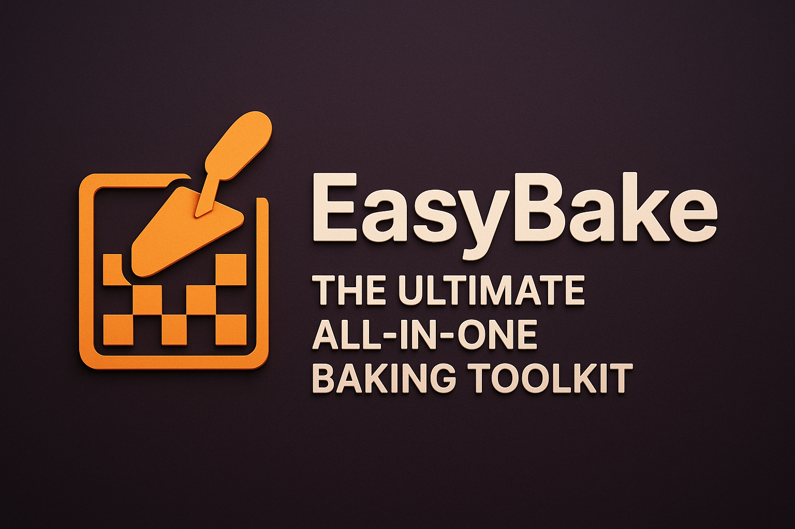
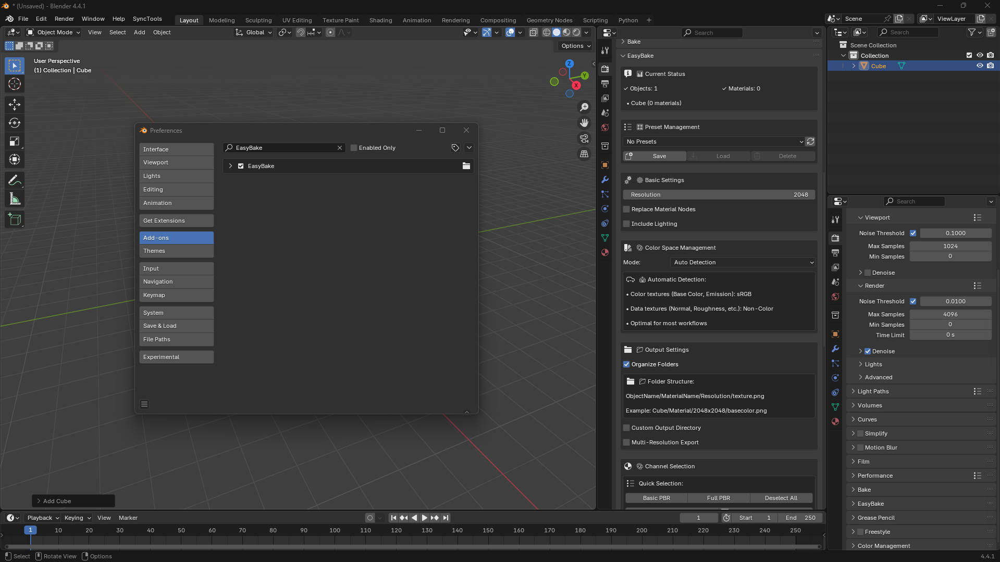
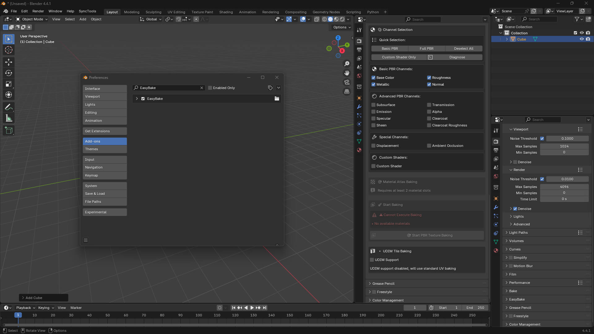
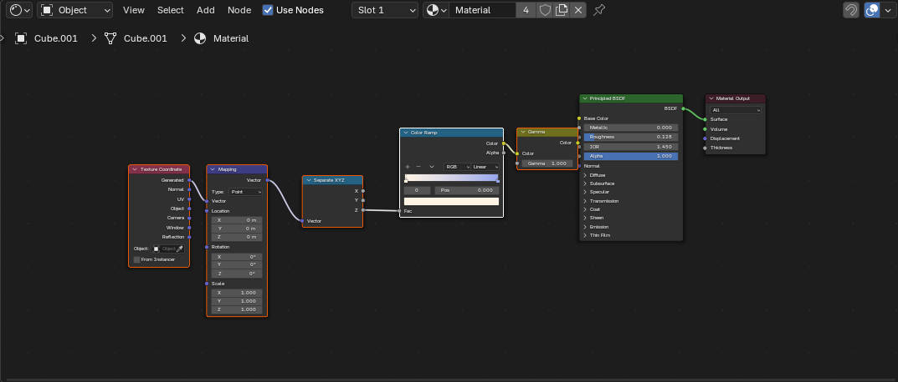
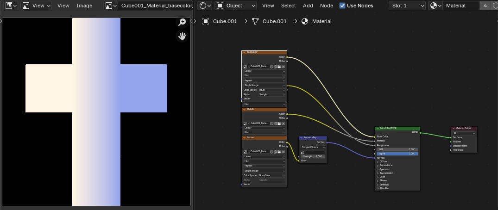
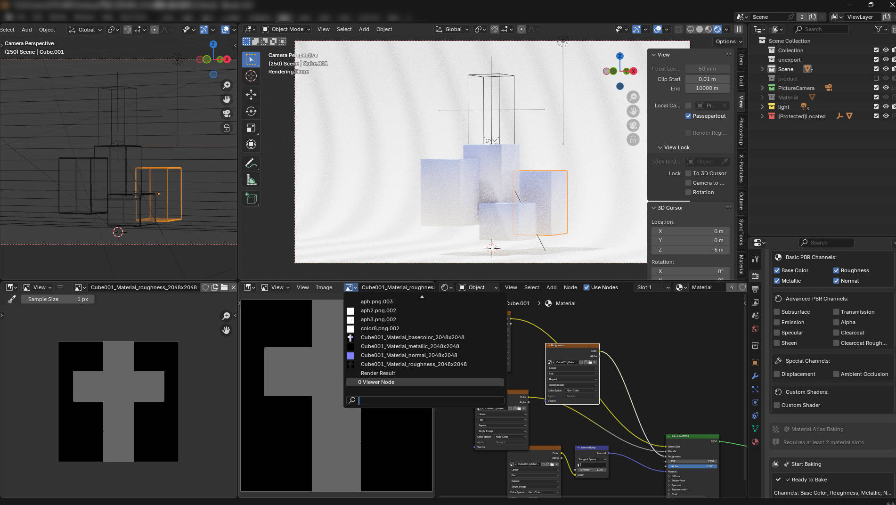

EasyBake: 终极一体化烘焙工具
$20.00相册

产品信息
描述
EasyBake: 终极一体化烘焙工具
厌倦了 Blender 中繁琐重复的烘焙设置？ 简单Bake 是一个强大的, workflow-oriented, all-in-one baking solution designed to elevate your texture baking process to a new level. 无论您是游戏开发者、特效艺术家还是建筑可视化专业人士, 简单Bake 将为您节省大量时间，让您专注于真正重要的事情———您的创造力。



🔥 核心 功能
简单Bake 不仅仅是另一个 baking addon; 它是一个集智能和强大功能于一身的完整工具包。
🎨 多功能烘焙引擎
我们强大的引擎让您突破标准烘焙的限制。
完整 PBR 通道支持: 烘焙所有标准 PBR 通道 (基础 颜色, Metallic, Roughness, 正常, etc.) 只需一键. 还支持次表面散射等高级通道，如 Subsurface, Transmission, Emission, AO, and Displacement.
革命性的自定义着色器烘焙: 这是革命性的突破！ 您不再局限于 Principled BSDF。 简单Bake 可以智能分析任何复杂的节点设置—无论您使用了多少个 Mix 着色器s, 添加 着色器s, 或自定义的 节点 分组s ——都能烘焙出最终视觉完美的结果。
光照和阴影烘焙: 轻松 将场景的光照、阴影和全局光照烘焙到纹理中。 包含简单的开关，可选择是否烘焙阴影，实现最大的艺术控制。
🚀 极速工作流
我们构建了 简单Bake 以加速您的整个流程 从头到尾.
批量处理: 选择多个对象并烘焙所有材质 一次性完成.
多分辨率导出: 只需烘焙一次，即可同时导出多种分辨率！ 支持s presets (512, 1K, 2K, 4K, 8K) 甚至自定义非正方形分辨率 （例如 1920x1080）。
自动节点替换: 烘焙后，自动将复杂的高性能节点树替换为使用新烘焙纹理的优化材质。
完整预设系统: 保存 和加载您的整个烘焙配置。 完美的 非常适合在项目和团队成员之间保持一致性。
🎮 游戏和生产就绪
为任何专业生产管线提供必备功能。
材料 Atlas: 优化 your game assets effortlessly! 合并 multiple materials from a single object into a single texture set. 简单Bake 会自动创建新的, efficient UV layout, significantly reducing draw calls.
完整UDIM支持: A complete UDIM workflow solution. Auto-detects UDIM tiles or allows you to specify a range manually. 支持s standard industry naming conventions (标准, Mari, Mudbox).
智能颜色 Space 管理: 自动 assigns the correct color space for each channel (e.g., sRGB for 基础 颜色, Non-颜色 for 正常/Roughness). 无需手动调整, just perfect results every time.



✨ 直观的 & 简单 to Use
一个强大的工具并不't have to be complicated.
清理 UI: 所有功能都整合在渲染属性选项卡中一个清晰简洁的面板中。
智能文件 Organization: 自动 create a clean folder structure for your baked textures, sorted by
对象Name/材料Name/分辨率.Live Status & Diagnostics: 清晰概览您选中的对象和材质。 Use the built-in diagnostic tool to analyze complex custom shaders.
Who is this for?
Game Artists: 优化 assets with 材料 通过批量烘焙实现纹理集合并简化纹理工作。
VFX and Film Artists: 处理 complex materials and UDIM workflows with ease.
Archviz 专业的s: 为交互式演示和实时-time rendering.
Blender Generalists: 保存 hours of manual work and simplify one of Blender's most complex processes.
停止 wrestling with Blender's baking system and start creating. Get 简单Bake ，为您的纹理工作流注入超级动力！
包含内容?
The 简单Bake 添加on (
.zipfile)完整文档
Lifetime 更新
Friendly Customer 支持
如果您有任何问题, feel free to contact us! 我们致力于将 简单Bake 打造成 Blender 最好的烘焙工具。
文档
EasyBake Pro 插件用户手册
简介
EasyBake Pro 是一款专为Blender设计的强大纹理烘焙插件。它支持多通道烘焙、多分辨率导出、材质合并（图集）、UDIM工作流程和预设管理等高级功能。适用于游戏开发、视觉特效和PBR资产创建等各种场景。该插件具有直观的界面和丰富的功能集，显著提高了纹理烘焙的效率和灵活性。
核心功能
一键烘焙多通道PBR纹理
多分辨率和自定义分辨率导出
材质合并（图集烘焙）
UDIM支持
预设保存和加载
自定义着色器烘焙
全面的色彩空间管理
智能UV处理和自动布局
多种输出文件命名规则
批量操作和自动文件夹组织
面板和操作指南
1. 基本参数
-
输出目录
选择烘焙纹理将导出到的文件夹。
-
分辨率
选择纹理的基础分辨率（从16到16384）。
-
边距
纹理烘焙的像素边距，用于防止接缝和渗色。
-
替换材质节点
勾选后，插件将在完成烘焙后自动用烘焙纹理替换原始材质节点。
-
Include Lighting (include_lighting)
决定是否烘焙场景's lighting information into the textures.
-
Shadow Mode (lighting_shadow_mode)
With Shadows: 在烘焙中包含阴影.No Shadows: Excludes shadows, baking only direct lighting.
-
组织 文件夹s 自动 (organize_folders)
自动 creates subfolders based on object/material/resolution for easy management.
2. Multi-分辨率 导出
-
启用 Multi-分辨率 (enable_multi_resolution)
允许同时导出多种常用分辨率 (512/1024/2048/4096/8192).
-
启用 Custom 分辨率 (enable_custom_resolution)
支持s up to 3 sets of custom resolutions, which can be non-square （例如 1920x1080）。
-
Use Custom 分辨率 (use_custom_1/2/3)
分别启用三个自定义分辨率插槽.
3. 通道 选择
Basic PBR 通道s
基础 颜色 (include_basecolor)
Roughness (include_roughness)
Metallic (include_metallic)
正常 (include_normal)
高级PBR 通道s
Subsurface (include_subsurface)
Transmission (include_transmission)
Emission (include_emission)
透明度 (include_alpha)
Specular (include_specular)
清除coat (include_clearcoat)
清除coat Roughness (include_clearcoat_roughness)
Sheen (include_sheen)
Special 通道s
Displacement (include_displacement)
Ambient Occlusion (AO, include_ambient_occlusion)
Custom 着色器
-
Custom 着色器 (include_custom_shader)
烘焙当前连接到 材料 输出 node.
4. Mixed 着色器 处理ing Strategy (mixed_shader_strategy)
当材质同时包含 Principled BSDF 和自定义着色器节点时:
-
完整Surface 输出
Bakes the complete 材料 输出 Surface (Recommended).
-
仅 Principled
仅烘焙 Principled BSDF 部分, ignoring custom shaders.
-
仅自定义
仅烘焙自定义着色器部分 (Experimental).
5. 材质合并（图集烘焙）
-
启用 材料 Atlas (enable_material_atlas)
合并s multiple material slots from an object into a single texture set.
-
Layout Mode (atlas_layout_mode)
Auto: 自动 calculates the optimal layout for the materials.Manual: 允许您手动指定行数和列数.
-
列s/行s (atlas_cols/atlas_rows)
在手动模式下指定纹理网格的列数和行数.
-
Padding (atlas_padding)
图集上不同材质区域之间的 UV 空间边距.
-
更新 UV (atlas_update_uv)
决定是否自动为图集生成新的 UV 贴图.
6. UDIM支持
-
启用 UDIM (enable_udim)
启用s UDIM tile baking, automatically generating a separate texture for each tile.
-
Auto Detect UDIM (udim_auto_detect)
自动 detects the UDIM tiles used by the selected model.
-
UDIM 范围 (udim_range_start / udim_range_end)
手动指定 UDIM 图块范围的起止.
-
Naming Mode (udim_naming_mode)
标准:material_name.1001.channel_name.pngMari:material_name_1001_channel_name.pngMudbox:material_name.channel_name.1001.png
7. 颜色 Space 管理
-
颜色 Space Mode (colorspace_mode)
Auto Detection: 自动 assigns the appropriate color space based on the channel type.Custom 设置: 为每种通道类型定义自定义色彩空间.Manual Override: 对所有烘焙纹理应用统一色彩空间.
-
通道 颜色 Spaces (colorspace_basecolor/normal/roughness/emission/manual_override)
单独指定色彩空间 (e.g., sRGB, Non-颜色, ACEScg, Raw) for channels like 基础颜色, 正常, Roughness/Metallic, and Emission.
8. Preset 管理
-
保存 Preset
保存s the current settings as a preset for quick recall later.
-
加载 Preset
恢复s all parameters from a saved preset 只需一键.
-
删除 Preset
移除s a preset you no longer need.
-
刷新 Preset 列表
手动刷新预设下拉菜单.
9. 快速的 分辨率 选择
-
游戏常用
One-click selection of common game resolutions (e.g., 1024/2048).
-
Film 高 质量
One-click selection of high-quality resolutions for film/VFX (e.g., 2048/4096/8192).
-
All 分辨率s
选择所有可用的预设分辨率.
-
清除 All
取消选择所有预设分辨率.
-
Custom 分辨率 Shortcuts
One-click buttons to set common custom resolutions (e.g., 1536, 3072, 1920x1080, 1280x720, 2560x1440, 3840x2160, 6144).
10. Other 功能
-
智能UV Unwrapping (smart_uv)
自动 generates a suitable UV map for an object if one doesn't exist.
-
Auto-Switch to Cycles (ensure_cycles)
自动 switches the render engine to Cycles 渲染器以启用烘焙.
自动and Manual 颜色 Space 赋值
Batch 烘焙 and 自动文件夹 Organization
Example 工作流
Select the object(s) you want to bake.
在插件面板中, set the output directory, resolution, channels, and other parameters.
(选项al) 启用 advanced features like Multi-分辨率, Atlas 烘焙, UDIMs, or load a preset.
Click the "Bake" button to start the process.
Once finished, the textures will be saved to the specified directory, with folders organized according to your settings.
FAQ & Suggestions
-
烘焙 Fails / 文本ure is Black?
检查您的对象是否已进行 UV 展开, the material nodes are connected correctly, and the render engine is set to Cycles.
-
如何自定义纹理文件名?
您可以灵活使用 UDIM 命名模式和文件夹组织选项来控制文件名.
-
如何批量烘焙多个对象?
该插件支持多-object selection for batch baking. 它会自动为每个对象生成纹理/material.
-
How do I save/migrate my presets?
预设以 JSON 文件保存在插件's directory and can be manually backed up or transferred.
Conclusion
EasyBake Pro is dedicated to providing Blender users with an efficient, flexible, and professional texture baking experience. 我们鼓励您尝试其各种功能，并根据您的项目需求进行配置's needs. 如果您有任何建议或问题, feedback is always welcome!
Product 文件s
- 简单Bake-CN.zip (2.0 KB)
- 简单Bake.zip (43.5 KB)
- file_3.zip (37.6 KB)
- userlist.txt (1.0 KB)